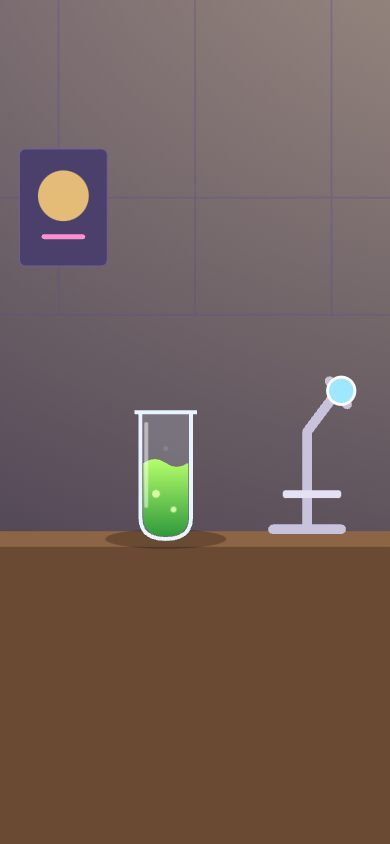
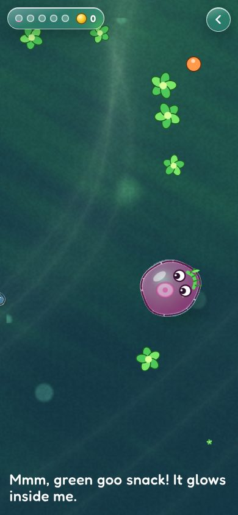
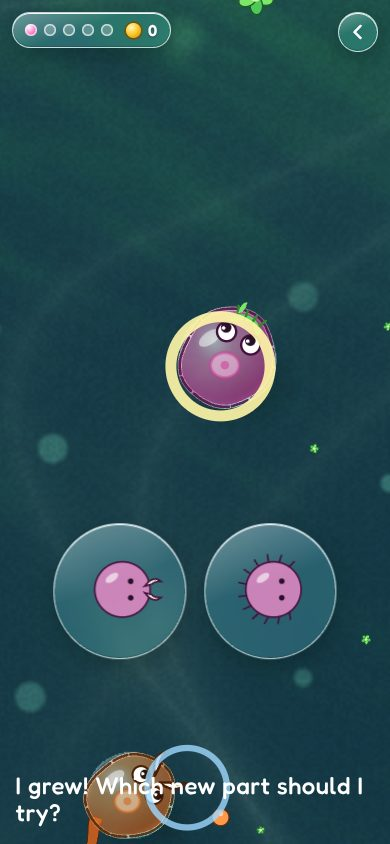
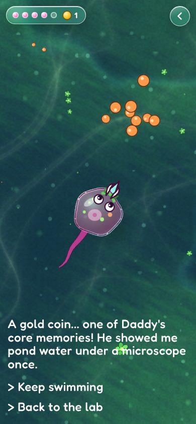

Evan, 2026-10-23 12:18 PM: "make abbie's science adventure, it is found inside the science lab in town .. there's a small beaker outside with a strange green goo. then when you go to that mini game, it's a spore style single cell top down battler, here the lens and shaders will SHINE and the SVG 2D will shine also ... focus on the 2D view." Then: "the early stage". So it is the Cell Stage only, in Spore's style and none of its expression.

Before: the beaker of strange green goo on the lab bench.
1. Tap the goo. A drop goes under the lens, and the lens opens onto the pond.

2. Pick a first mouth: leaves or chompers. Hold to swim, tap to dash.

3. Eat enough and you grow. Pick a new part in a glass lens.

4. Grow four times, the giant rises, and it leaves a gold coin.
Size is the rule. Smaller cells are food, bigger ones are danger. A jaw swallows anything less than half your size whole; peers take a fight. You read it off the creatures, not a meter.
Diet by mouth. The leaf mouth eats green algae, chompers eat the orange bits a popped cell leaves. Food that isn't yours bumps away.
Parts change how you swim. A tail (faster), cilia (nimble turns), a spike (ram), chompers (bite), a poison sac (a dash leaves a green cloud). Glinting glass shells in the goo hold parts; the ones you find come first in the picker.
Growing lifts you a layer. Five growth steps. Each time, the camera rises and the old giants are now your size. At the fifth, a giant rises from the deep.
Soft failure. If you pop, a new you buds from the goo a moment later with half its snacks. Kids never lose their parts.
The gold coin. The giant leaves one of Daddy's core memories: he once showed Abbie pond water under a microscope. It counts in the same coin total as the basement and the school.
The lens, the shaders and the SVG
Every cell is a lens. The water is a WebGL shader (simulations/lens-pond.mjs). Each cell body is a liquid-glass drop: the shader samples the water again through it, magnified, bent at the rim with the same profile as our panel lens (lensMap() in liquid-glass.mjs), a little apart per colour, with a bright sunward rim and a teal shade rim. It runs on phones, not only where CSS can refract.
The water takes the top two picks from Inspiring Shaders: Tiny Glade's soft moving sunlight, and Painted Brush's brush-broken shade, purple shadows, teal rim and 12-frames-a-second effects (glow specks and poison clouds hold each frame like hand-drawn effects). Giant shapes drift in the deep and motes in the middle distance, each on its own parallax layer.
The cells are rigged SVG (simulations/microbe-kit.mjs): a soft membrane of 24 points on springs that dents where it's hit, squashes as it swims and breathes; a tail chain that lags and whips (the puppet study's follow-through); cilia beating in a travelling wave; jaws that open as prey comes near; eyes that look at what matters and blink. Light is fixed to the world, so the membrane is drawn unrotated and only the parts turn.
One mood signal (danger near Abbie) cools the light, dims the sun, speeds the music and drops it minor, and lowers the pond's hum.
How it shows information
What
How a cell would know
Mode
Growth
What you've eaten floats inside you as glowing bits; you get bigger
Diegetic, plus five glass beads in the pill
Health
The membrane dents, pales and wobbles; a heartbeat when it's low
Diegetic and meta
Danger
Size, a hunter's narrowed eyes and open jaw, the light cooling
Diegetic
Parts
On the body, animating
Diegetic; the picker is summoned
Daddy's coins
Only you know
Overlay: the coin in the pill
The play HUD is one glass pill (about 2% of a phone screen) and a back button, with zero words. Abbie's inner voice speaks in captions at story beats only. Developer mode (?dev) shows contact circles and the mood number.
Tour
Tour: yes. It is a whole new place to visit from the town's science lab, short, and shows off the lens.